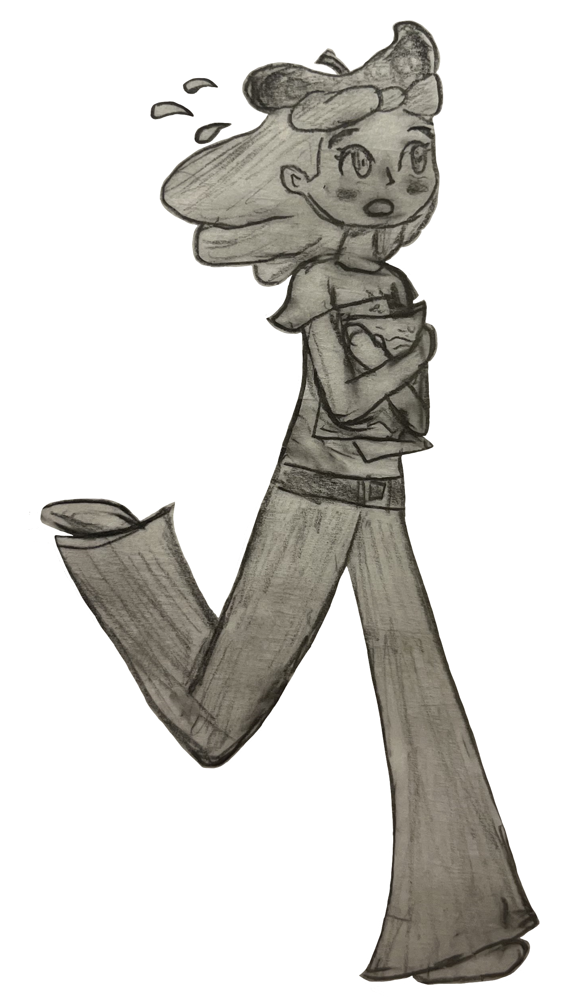
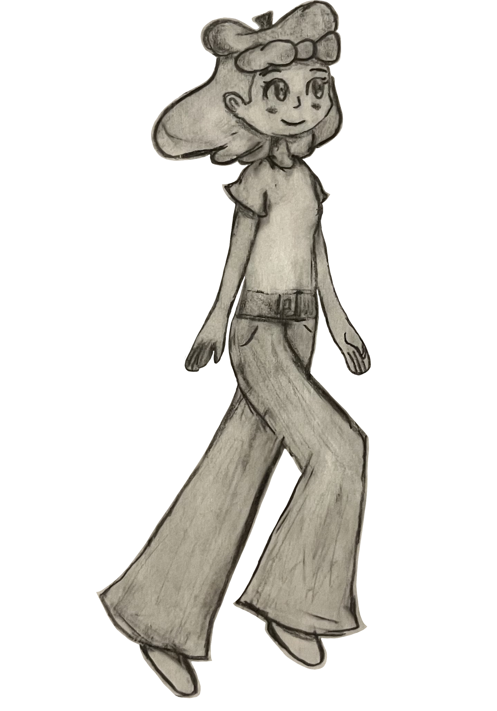
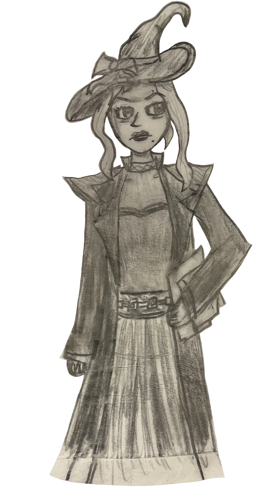
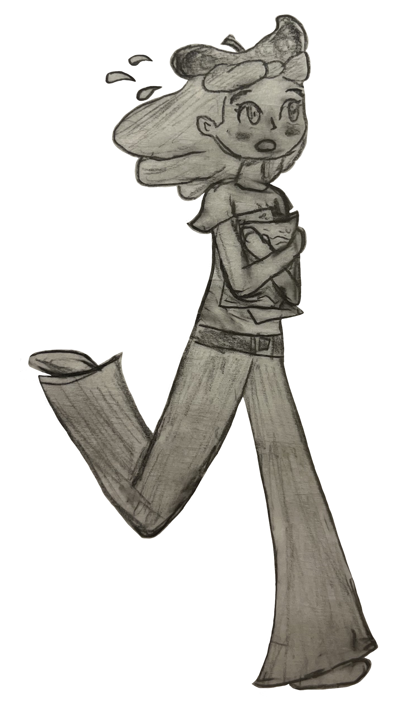
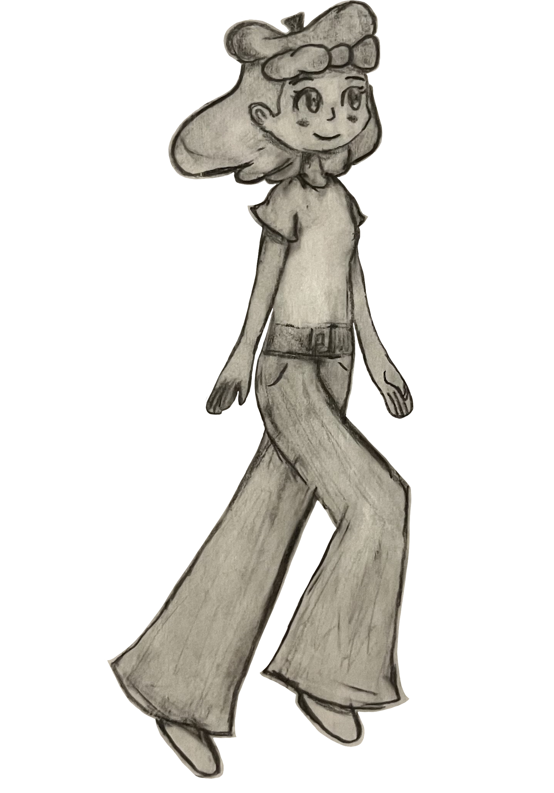
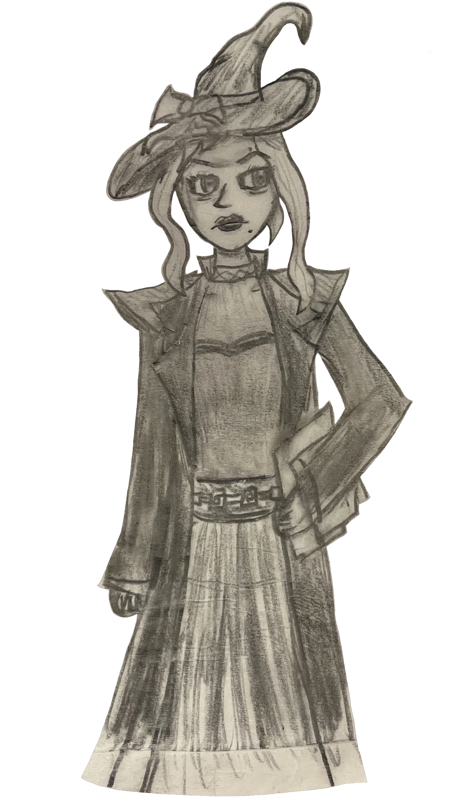

- Developed in the Unity Engine version 2022.
- Art Assets created using paper & pencil, Paint.NET, and PenUP.
- Platforms: Windows (x32 and x64), macOS, Linux.
- iOS and Android versions are planned for the future.
- Control methods: Mouse & Keyboard, Nintendo Wii Remote.
- Touch controls planned for mobile versions.
- Potential of switch port utilizing only touch controls
- Estimated duration of a play session: ~1 hour.
The game is divided into levels, with three subdivisions each.
With the exceptions of the first and last level, levels are each themed around a color that is introduced to the player gradually before being given the ability to draw with it.
The three subdivisions are formatted as such:
The gameplay loop is structured primarily around exploration, with a secondary focus on challenge, in a way that is comparable to "Celeste" by Extremely Okay Games.
Whether learning new colors, discovering secret side-areas, or clearing a tough section, the player is pushed towards finding what fun new experience lies ahead, while also allowing for replayability though collectibles.
With the exceptions of the first and last level, levels are each themed around a color that is introduced to the player gradually before being given the ability to draw with it.
The three subdivisions are formatted as such:
- 1) Introduce the player to the mechanics of the level.
- 2) Give the player more control over these mechanics.
- 3) Test their skill and understanding of said mechanics through a challenging final section.
The gameplay loop is structured primarily around exploration, with a secondary focus on challenge, in a way that is comparable to "Celeste" by Extremely Okay Games.
Whether learning new colors, discovering secret side-areas, or clearing a tough section, the player is pushed towards finding what fun new experience lies ahead, while also allowing for replayability though collectibles.
In the final release there will be at least around:
- Eight main story levels.
- Short cutscenes between each level.
- Eight challenge levels (corresponding to each main level).
- Numerous collectibles and side areas in each level.
- A gallery of concept art and bonus content unlockable through acquiring collectibles.
- A sandbox area to mess around with the mechanics of the game.


 




